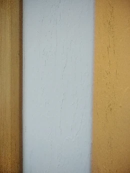
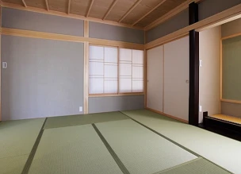
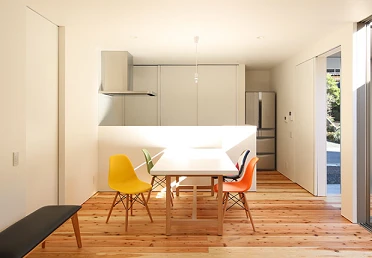
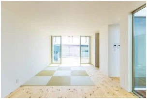
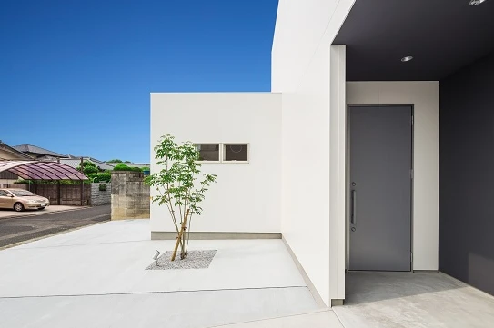
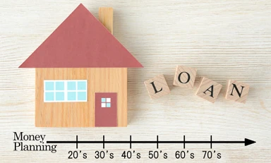
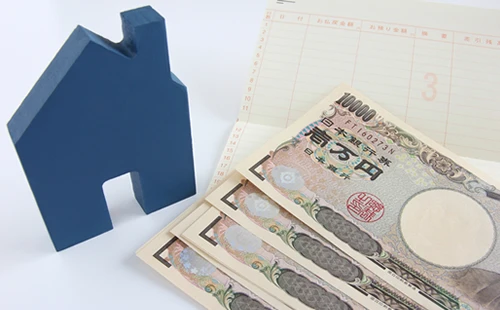
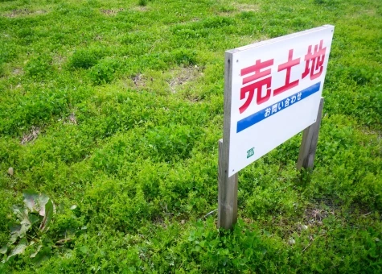
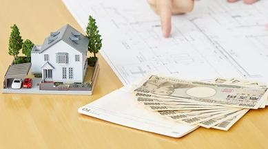
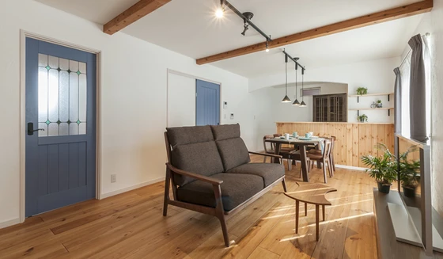

自分でメンテナンスできる、漆喰の壁
こんにちは。富山で自然素材にこだわるホンモノの家、フジ創アイノスです。 アイノスの家の壁は、漆喰の左官塗り壁です。 漆喰は湿度にあわせて湿気を吸収＆放出し、快適な空気環境をつくる自然の調湿機能があります。 子供が壁に落書
続きを読む →FUJISOU AINOS JOURNAL
家づくりのこと、暮らしのこと。
日々の想いを、お伝えします。
家づくりについて 556件 ／ 新しい記事から 13・24ページ

こんにちは。富山で自然素材にこだわるホンモノの家、フジ創アイノスです。 アイノスの家の壁は、漆喰の左官塗り壁です。 漆喰は湿度にあわせて湿気を吸収＆放出し、快適な空気環境をつくる自然の調湿機能があります。 子供が壁に落書
続きを読む →
こんにちは。富山で自然素材にこだわるホンモノの家、フジ創アイノスです。 前回お伝えした、キッチンカウンターと同じような現象が起こる場所が『和室』です。 せっかくつくったのに、実際はほとんど使わない無駄な部屋になるか、キッ
続きを読む →
こんにちは。富山で自然素材にこだわるホンモノの家、フジ創アイノスです。 一般的な家はもちろん、ここ最近建てられた賃貸アパートやマンションなども、キッチンは対面式になっており、ダイニング側にはキッチンカウンターが設置されて
続きを読む →
こんにちは。富山で自然素材にこだわるホンモノの家、フジ創アイノスです。 解決策その1：リビングの位置を南にこだわらない 周囲が家に囲まれている敷地の場合、光を採り込むためには、隣に建っているお家との間に充分な距離を確保し
続きを読む →こんにちは。富山で自然素材にこだわるホンモノの家、フジ創アイノスです。 "リビングダイニングキッチンの窓は南につくりたい"、家づくりをする誰もが希望することでしょう。 そして多くの方が、リビングダイニングキッチンの南には
続きを読む →
こんにちは。富山で自然素材にこだわるホンモノの家、フジ創アイノスです。 白い建物って、とても美しいですよね。 白は熱を吸収しにくいため、家の中が暑くなりにくいというメリットもあるし、白は光を拡散しやすいため、家の隅々まで
続きを読む →
こんにちは。富山で自然素材にこだわるホンモノの家、フジ創アイノスです。 家の正面に窓を作らない2つ目の理由は、 「防犯性を高くするため」 です。 一般的に建てられているお家の多くは、窓を見ただけで間取りが分かってしまいま
続きを読む →こんにちは。富山で自然素材にこだわるホンモノの家、フジ創アイノスです。 SIMPLE NOTEの家の多くは、家の正面であるファサードに窓がありません。 そして、窓がないだけではなく、キッチンや洗面、お風呂などの換気扇や、
続きを読む →こんにちは。富山で自然素材にこだわるホンモノの家、フジ創アイノスです。 例えば、平屋と2階建てと３階建ての３つを比較した時、どの建物が外部からかかる力に一番強いでしょうか。 もちろん、この答えは平屋です。 重心が低くなれ
続きを読む →
こんにちは。富山で自然素材にこだわるホンモノの家、フジ創アイノスです。 前回、固定期間選択型商品は、 金利上昇時の返済額アップに天井がない という特徴があるとお話ししました。 この商品は、未払い利息の発生リスクはないもの
続きを読む →こんにちは。富山で自然素材にこだわるホンモノの家、フジ創アイノスです。 もしも、住宅ローンに対する知識がほとんどない状態で一見客として銀行の窓口に行ったら、確実に銀行側がすすめてくる住宅ローンは、 固定期間選択型 の商品
続きを読む →こんにちは。富山で自然素材にこだわるホンモノの家、フジ創アイノスです。 変動金利型の住宅ローンは、市場の金利に応じて適用金利が変わる仕組みになっており、金利が上がった場合は、これに連動して返済額が増えることになります。
続きを読む →
こんにちは。富山で自然素材にこだわるホンモノの家、フジ創アイノスです。 同じ金額を銀行から借りるとして、その毎月の返済額が、75,000円になるのと80,000円になるのでは、どちらの方を選びますか？ また、返済負担が高
続きを読む →
こんにちは。富山で自然素材にこだわるホンモノの家、フジ創アイノスです。 希望するエリアで少しでも価格を抑えながら土地を手に入れるためには、まずは土地に関する間違った常識を一旦リセットし、正しい知識を身に付けないといけませ
続きを読む →
こんにちは。富山で自然素材にこだわるホンモノの家、フジ創アイノスです。 自然素材の特徴に、一つとして同じものがないことが挙げられます。 樹木が育つためには葉を繁らせるための枝が必要であり、枝の跡が製材した後に節として残り
続きを読む →
こんにちは。富山で自然素材にこだわるホンモノの家、フジ創アイノスです。 日当たりが悪そうな土地は、とても不人気であるため、ずいぶん割安で購入することが出来ます。 また不動産屋さん側から見ると、売れにくそうな土地ほど早く処
続きを読む →こんにちは。富山で自然素材にこだわるホンモノの家、フジ創アイノスです。 資金計画の結果、家づくりの予算を抑えなければいけないという現実に直面したとしたら、土地の予算を圧縮しなければいけません。 予算圧縮のしわ寄せを家だけ
続きを読む →
こんにちは。富山で自然素材にこだわるホンモノの家、フジ創アイノスです。 ✔予算を抑えるためにはバランス良く配分することが大切 自分にとってのベストな予算を知るためには、まず資金計画を行わなければいけません。 では、資金計
続きを読む →
こんにちは。富山で自然素材にこだわるホンモノの家、フジ創アイノスです。 老後の暮らしのことを考えると、誰もが自分の家を持っていた方が良いと言われています。 というのも、賃貸で暮らし続けるとなると、生涯ずっと家賃がかかり続
続きを読む →
こんにちは。富山で自然素材にこだわるホンモノの家、フジ創アイノスです。 当社では、家族が安心して健康的な生活をしていただくために、自然素材にこだわった家づくりをしています。 『自然素材の家』と聞くと、「高い」というイメー
続きを読む →
こんにちは。富山で自然素材にこだわるホンモノの家、フジ創アイノスです。 家を建てることの大きな目標として、住む人が健康で末永く暮らし続けることが挙げられます。 だからこそ安全で安心な家を誰もが求めています。 「木の家って
続きを読む →
こんにちは。富山で自然素材にこだわるホンモノの家、フジ創アイノスです。 ✔最強の保険「国民健康保険」 国民年金さえ支払っていれば、私たちは医療費の負担が30％で済みます。 さらに、国民年金に加入していれば、誰でも "高額
続きを読む →こんにちは。富山で自然素材にこだわるホンモノの家、フジ創アイノスです。 家を建てる時は、保険を見直す良い機会だと言われています。 というのも、家を建てるにあたり住宅ローンを利用する場合、必ず団体信用生命保険という掛け捨て
続きを読む →こんにちは。富山で自然素材にこだわるホンモノの家、フジ創アイノスです。 貯蓄と言えば、真っ先に思い浮かぶのは、「銀行」ですよね。 実際、日本人の金融資産の52.5％は、「現金・預金」で占められており、これはつまり、銀行に
続きを読む →